Logo redesign — Tulipa vetorizada com fio capilar estilizado no caule. Linha minimalista, elegante, premium.
7 variações de cor para diferentes aplicações
Tulipa + FLORIZZ + HAIR & SCALP CLINIC
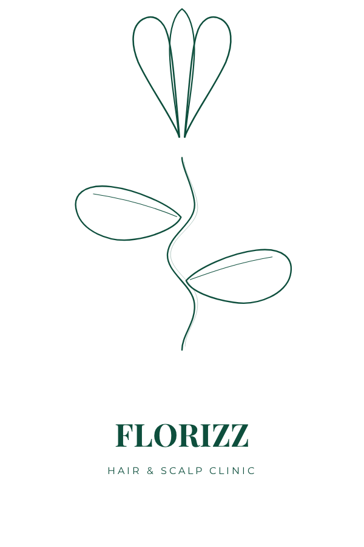
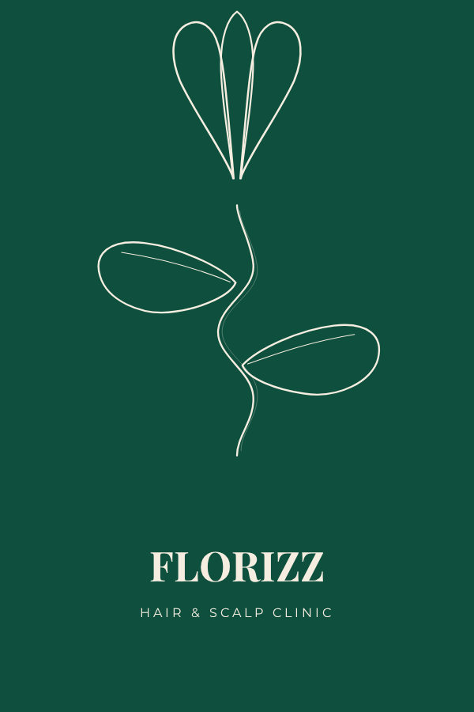
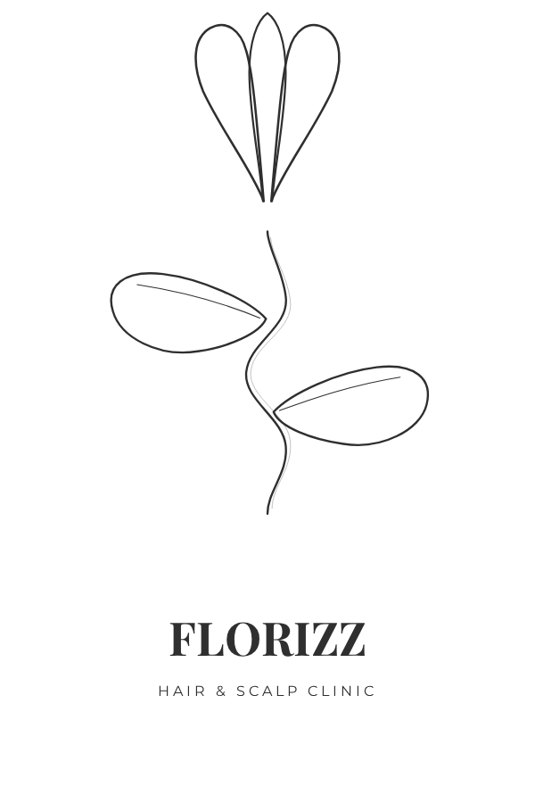
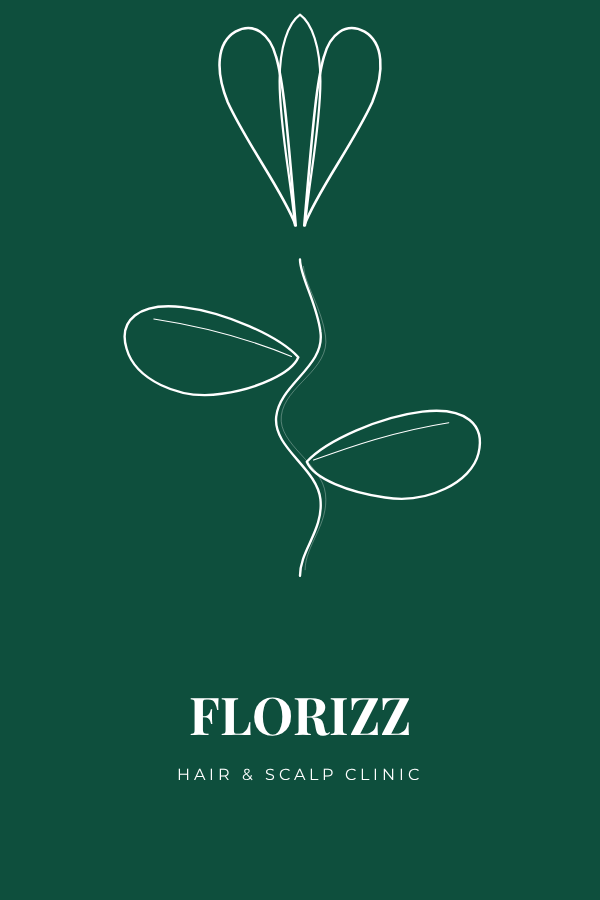
Ideal para headers, assinaturas de email, banners
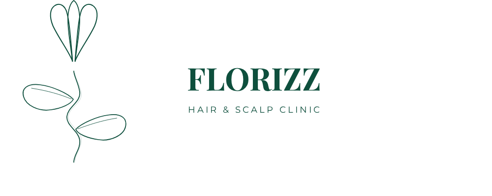
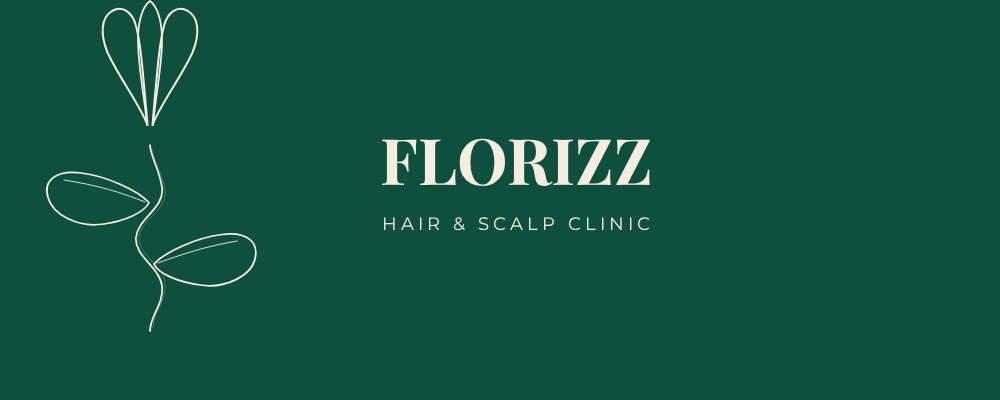
Tulipa com fio capilar + folhas — sem texto
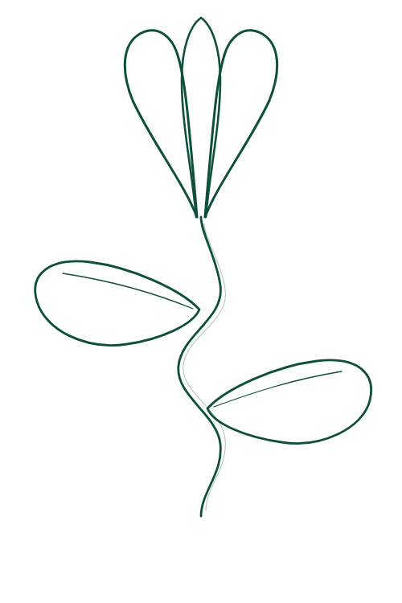
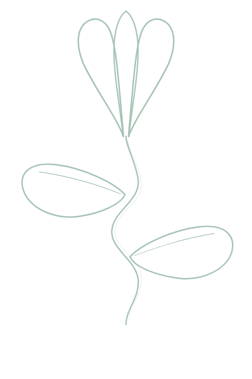
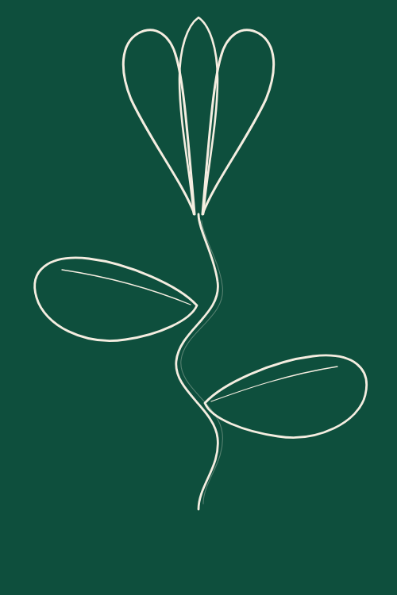
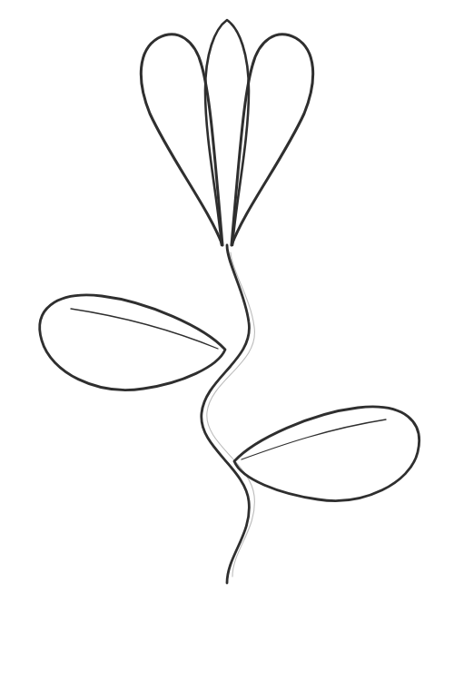
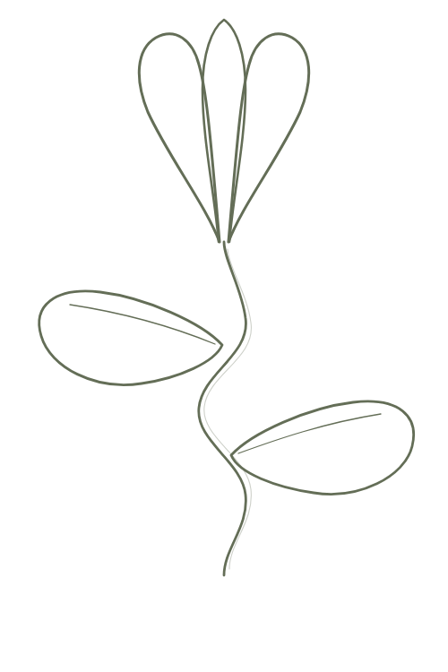
Apenas a flor da tulipa — uso em avatars, favicons, watermarks
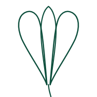
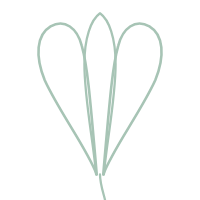
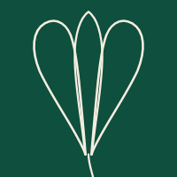
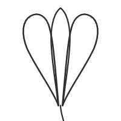
Florizz Hair & Scalp Clinic — Logo v3 Refined
Tulipa vetorizada + fio capilar estilizado | 7 cores × 4 layouts = 31 arquivos